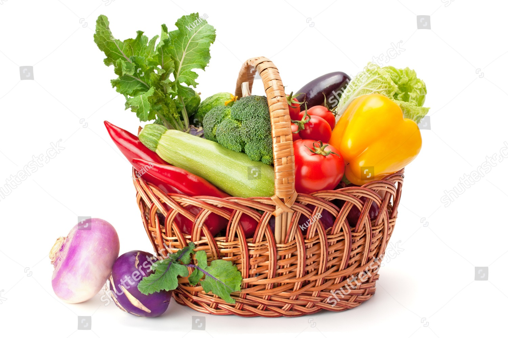

Organic Planet is an initiative to bring in fresh fruits, vegetables, pulses and a wide range of organic products required to fulfill the urbanites everyday nutrition quotient. Organic Planet is an initiative to bring in fresh fruits, vegetables, pulses and a wide range of organic products required to fulfill the urbanites everyday nutrition quotient.
Introducing first of it's kind, Assorted Baskets.
Assorted baskets contains fruits and vegetables needed for your daily nutrition quotient. Assorted Baskets come in 2 different sizes:
Super Basket: A week's supply of fruits and vegetables sufficient for a family of four.
Mini Basket: 3 days' supply of fruits, vegetables sufficient for a family of four.
The choices of vegetables and fruits, the amount/weight could be updated with the season's best available supply.
Assorted Baskets
Chosen from The Best of the Season
Super basket
Mini Basket